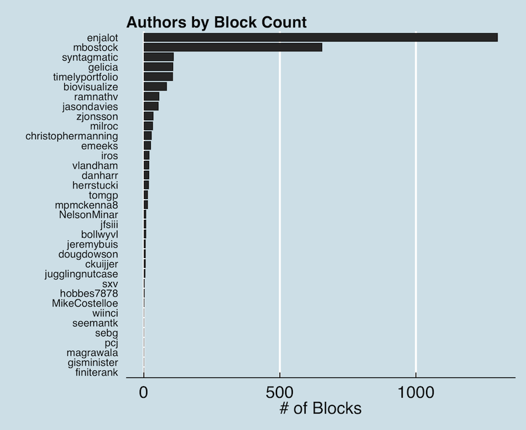
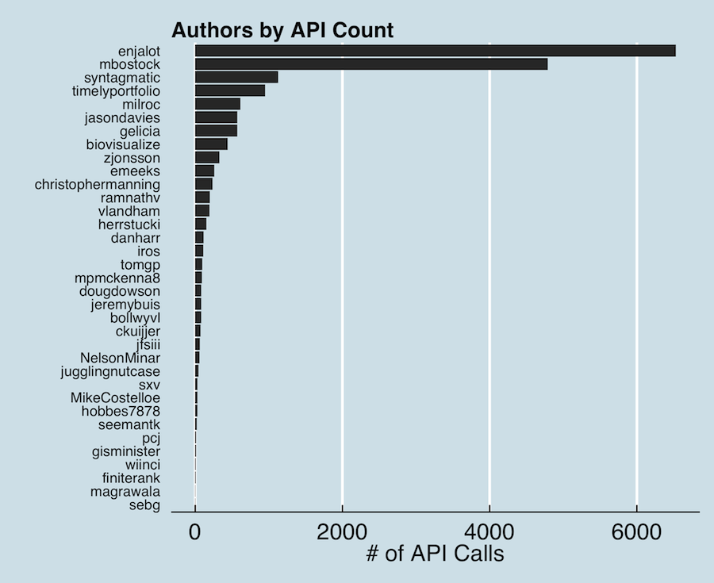
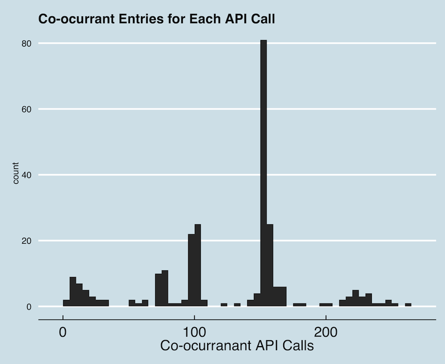
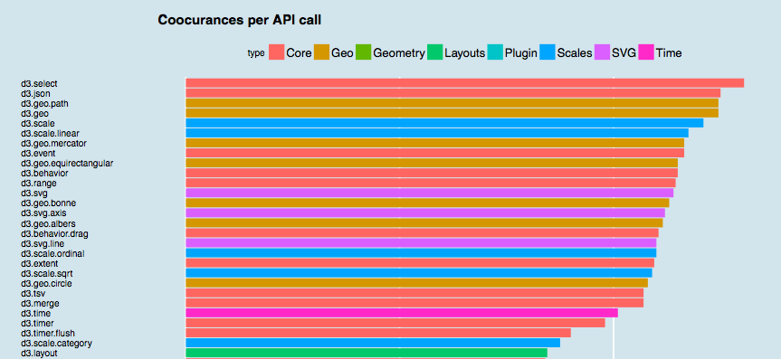
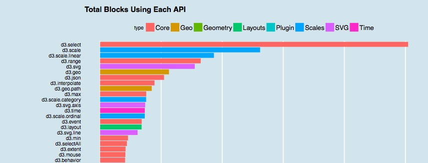

Block Analysis
Let's find out more about the blocks!
Whose Blocks are These?
First, let's look at the Block authors. This list is the starting seed for the block exploration process - so we should have a good handle on who all is contributing to the list.
Also, remember that this author list will be changing and expanding all the time - as Irene and other block explorers add more authors. This highlights the snapshot nature of this basic analysis. This is the landscape of the blocks - at a particular moment of time.
Here are all the authors found for all API calls - ordered by the number of blocks to their name.
{kind=link}
Surprising to some, Mike Bostock (mbostock) comes in as a distant second behind the extravagantly prolific enjalot. Perhaps not so surprisingly, these two dominate the block count. Roughly 70% of the 2,783 blocks scanned are attributed to these two dynamite coders. There I am (vlandham) with a pitiful 20 blocks to my name. Well, at least now I have a block count to aspire to...
Just for fun (and because I messed up on my initial attempt at quantifying blocks), let's look at the number of API calls associated with each author (hint: as you might expect, it follows the same pattern):
{kind=link}
A point of interest: mbostock's blocks are slightly more complex then enjalot's. Though enjalot has more blocks, mbostock has proportionately more API calls. So there are more uses of D3 in Mike's blocks then in enjalot's blocks (probably not a surprise).
But anyways, we have about 18,000 API calls across 2,783 blocks and most (62%) can be attributed to mbostock and enjalot. Interesting! Let's find out more!
How Many Co-occurances Do These API Calls Have?
The main thing I was interested in when I first started analyzing this data was related to answering the questions related to which API calls occur most frequently together.
Fortunately for me, Irene, in her infinite wisdom, has provided this data as part of what the Blocksplorer collects for each API call. Each API call has a listing of other API calls they were used with in the same block, and how frequently. In the data, API calls that occur in the same block are called co-occurances. If you were to visualize the calls as a network (which is something I want to do), then co-occurances would be the links between the API nodes.
There are 262 unique API calls currently analyzed by Blocksplorer. Let's get a feel for how many API calls are linked to each of these calls - how many calls occur together. Here is a histogram of co-occurance counts per API call.
{kind=link}
This is a histogram, so a binning of each possible number of co-occurrant link count is on the x axis, and the counts of API calls in each bins are on the y axis.
This says that many API calls have around 100 co-occurrant calls, but there is a large number of API calls (80+) that have associations with right around 150 other API calls. These would be the parts of D3 that are used everywhere, right? A large portion of the D3 toolkit is associated with one another. They all get called together.
Grouping the Calls
For fun, I tried pulling out a category that could be associated with each API call. These categories come primarily from the D3 documentation. The headings for each D3 function grouping provide a concise categorization of the API. For plugins, I added the additional map projections and functionality to the 'Geo' category. Other plugins were given the 'Plugin' category. For an initial test, I graphed all of the API calls and the number of co-occurrant counts associated with each one.
The graph is a little too long - so here's the squashed version. Click to see the full screen one (in pdf).
So, d3.select is used with everything. No big surprise. Most of the top functions are in Core, or Scales, or SVG. I'm not sure why so many functions have around 150 links (maybe I'm doing something wrong?). Many of the API calls in this range are part of Time. It could be there is just a set of time-related blocks that all use the same calls. Maybe it has to do with the data collection process. Any ideas?
We can do the same visual with just raw block counts. Answering the question: How many blocks include a particular D3 function:
Again, the big winner is d3.select - its used in most of the blocks analyzed. It is surprising that d3.selectAll is isn't as hot.